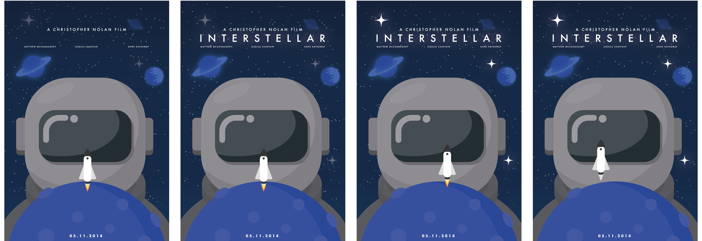

For this assignment, we were tasked with creating a dynamic poster for a Christopher Nolan film, all within a single HTML file. The challenge also stipulated that we couldn't use any images; instead, we had to encode them in code.
I opted to create a dynamic poster for the film "Interstellar." I chose clean and clear fonts to ensure readability. In terms of design, I emphasized the vastness of space to capture the essence of the movie.
At the outset of the assignment, our first step was to conduct research, delving into two key areas: the director and the film itself. We meticulously gathered information about the director's background, artistic style, and previous works to gain insights into their vision and approach. Simultaneously, we immersed ourselves in the world of the film, studying its themes, characters, and visual motifs. This dual exploration provided us with a comprehensive understanding, laying a solid foundation for the creative journey ahead.
When I started designing the dynamic poster for "Interstellar," I began by creating three sketches. Each sketch captured an aspect of the film, from the vast expanse of space to the emotional journey of the characters. By sketching, I was able to explore different ideas and capture the essence of the film in the rough lines on paper. It was a creative process that helped me understand the visual language of the film and ultimately create a impactful poster that would tell the story of "Interstellar."

In this storyboard, you can witness the animation unfold. The poster initiates sans title, gradually unveiling its majestic lettering. As the stars begin to twinkle, a symphony of celestial brilliance ensues, accompanied by the rhythmic swaying of the rocket. With flames igniting beneath its belly, the rocket embarks on a mesmerizing ascent, casting an illusion of liftoff into the boundless expanse of the cosmos.
